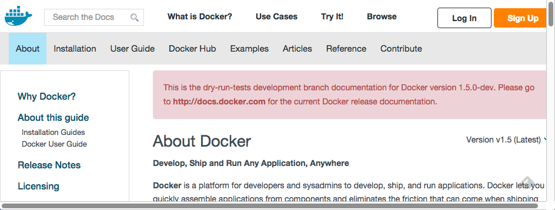

Run tests and test documentation
Contributing includes testing your changes. If you change the Docker code, you
may need to add a new test or modify an existing one. Your contribution could
even be adding tests to Docker. For this reason, you need to know a little
about Docker’s test infrastructure.
Many contributors contribute documentation only. Or, a contributor makes a code
contribution that changes how Docker behaves and that change needs
documentation. For these reasons, you also need to know how to build, view, and
test the Docker documentation.
In this section, you run tests in the dry-run-test branch of your Docker
fork. If you have followed along in this guide, you already have this branch.
If you don’t have this branch, you can create it or simply use another of your
branches.
Understand testing at Docker
Docker tests use the Go language’s test framework. In this framework, files
whose names end in _test.go contain test code; you’ll find test files like
this throughout the Docker repo. Use these files for inspiration when writing
your own tests. For information on Go’s test framework, see Go’s testing package
documentation and the go test help.
You are responsible for unit testing your contribution when you add new or
change existing Docker code. A unit test is a piece of code that invokes a
single, small piece of code ( unit of work ) to verify the unit works as
expected.
Depending on your contribution, you may need to add integration tests. These
are tests that combine two or more work units into one component. These work
units each have unit tests and then, together, integration tests that test the
interface between the components. The integration and integration-cli
directories in the Docker repository contain integration test code.
Testing is its own specialty. If you aren’t familiar with testing techniques,
there is a lot of information available to you on the Web. For now, you should
understand that, the Docker maintainers may ask you to write a new test or
change an existing one.
Run tests on your local host
Before submitting any code change, you should run the entire Docker test suite.
The Makefile contains a target for the entire test suite. The target’s name
is simply test. The Makefile contains several targets for testing:
| Target |
What this target does |
| test |
Run all the tests. |
| test-unit |
Run just the unit tests. |
| test-integration-cli |
Run the test for the integration command line interface. |
| test-docker-py |
Run the tests for Docker API client. |
Run the entire test suite on your current repository:
Open a terminal on your local host.
Change to the root your Docker repository.
$ cd docker-fork
Make sure you are in your development branch.
$ git checkout dry-run-test
Run the make test command.
$ make test
This command does several things, it creates a container temporarily for
testing. Inside that container, the make:
- creates a new binary
- cross-compiles all the binaries for the various operating systems
- runs all the tests in the system
It can take approximate one hour to run all the tests. The time depends
on your host performance. The default timeout is 60 minutes, which is
defined in hack/make.sh(${TIMEOUT:=60m}). You can modify the timeout
value on the basis of your host performance. When they complete
successfully, you see the output concludes with something like this:
PASS: docker_cli_pull_test.go:133: DockerHubPullSuite.TestPullClientDisconnect 1.127s
PASS: docker_cli_pull_test.go:16: DockerHubPullSuite.TestPullFromCentralRegistry 1.049s
PASS: docker_cli_pull_test.go:65: DockerHubPullSuite.TestPullFromCentralRegistryImplicitRefParts 9.795s
PASS: docker_cli_pull_test.go:42: DockerHubPullSuite.TestPullNonExistingImage 2.158s
PASS: docker_cli_pull_test.go:92: DockerHubPullSuite.TestPullScratchNotAllowed 0.044s
OK: 918 passed, 13 skipped
PASS
coverage: 72.9% of statements
ok github.com/docker/docker/integration-cli 1638.553s
---> Making bundle: .integration-daemon-stop (in bundles/1.9.0-dev/test-integration-cli)
++++ cat bundles/1.9.0-dev/test-integration-cli/docker.pid
+++ kill 9453
+++ /etc/init.d/apparmor stop
* Clearing AppArmor profiles cache
...done.
All profile caches have been cleared, but no profiles have been unloaded.
Unloading profiles will leave already running processes permanently
unconfined, which can lead to unexpected situations.
To set a process to complain mode, use the command line tool
'aa-complain'. To really tear down all profiles, run the init script
with the 'teardown' option."
---> Making bundle: test-docker-py (in bundles/1.9.0-dev/test-docker-py)
---> Making bundle: .integration-daemon-start (in bundles/1.9.0-dev/test-docker-py)
+++ /etc/init.d/apparmor start
* Starting AppArmor profiles
Skipping profile in /etc/apparmor.d/disable: usr.sbin.rsyslogd
...done.
+++ exec docker daemon --debug --host unix:///go/src/github.com/docker/docker/bundles/1.9.0-dev/test-docker-py/docker.sock --storage-driver overlay --exec-driver native --pidfile bundles/1.9.0-dev/test-docker-py/docker.pid --userland-proxy=true
..............s..............s......................................
----------------------------------------------------------------------
Ran 68 tests in 79.135s
Run test targets inside the development container
If you are working inside a Docker development container, you use the
hack/make.sh script to run tests. The hack/make.sh script doesn’t
have a single target that runs all the tests. Instead, you provide a single
command line with multiple targets that does the same thing.
Try this now.
Open a terminal and change to the docker-fork root.
Start a Docker development image.
If you are following along with this guide, you should have a
dry-run-test image.
$ docker run --privileged --rm -ti -v `pwd`:/go/src/github.com/docker/docker dry-run-test /bin/bash
Run the tests using the hack/make.sh script.
root@5f8630b873fe:/go/src/github.com/docker/docker# hack/make.sh dynbinary binary cross test-unit test-integration-cli test-docker-py
The tests run just as they did within your local host.
Of course, you can also run a subset of these targets too. For example, to run
just the unit tests:
root@5f8630b873fe:/go/src/github.com/docker/docker# hack/make.sh dynbinary binary cross test-unit
Most test targets require that you build these precursor targets first:
dynbinary binary cross
Running individual or multiple named tests
Unit tests
We use golang standard testing
package or gocheck for our unit tests.
You can use the TESTDIRS environment variable to run unit tests for
a single package.
$ TESTDIRS='opts' make test-unit
You can also use the TESTFLAGS environment variable to run a single test. The
flag’s value is passed as arguments to the go test command. For example, from
your local host you can run the TestBuild test with this command:
$ TESTFLAGS='-test.run ^TestValidateIPAddress$' make test-unit
On unit tests, it’s better to use TESTFLAGS in combination with
TESTDIRS to make it quicker to run a specific test.
$ TESTDIRS='opts' TESTFLAGS='-test.run ^TestValidateIPAddress$' make test-unit
Integration tests
We use gocheck for our integration-cli tests.
You can use the TESTFLAGS environment variable to run a single test. The
flag’s value is passed as arguments to the go test command. For example, from
your local host you can run the TestBuild test with this command:
$ TESTFLAGS='-check.f DockerSuite.TestBuild*' make test-integration-cli
To run the same test inside your Docker development container, you do this:
root@5f8630b873fe:/go/src/github.com/docker/docker# TESTFLAGS='-check.f TestBuild*' hack/make.sh binary test-integration-cli
Testing the Windows binary against a Linux daemon
This explains how to test the Windows binary on a Windows machine set up as a
development environment. The tests will be run against a docker daemon
running on a remote Linux machine. You’ll use Git Bash that came with the
Git for Windows installation. Git Bash, just as it sounds, allows you to
run a Bash terminal on Windows.
If you don’t have one open already, start a Git Bash terminal.

Change to the docker source directory.
$ cd /c/gopath/src/github.com/docker/docker
Set DOCKER_REMOTE_DAEMON as follows:
$ export DOCKER_REMOTE_DAEMON=1
Set DOCKER_TEST_HOST to the tcp://IP_ADDRESS:2376 value; substitute your
Linux machines actual IP address. For example:
$ export DOCKER_TEST_HOST=tcp://213.124.23.200:2376
Make the binary and run the tests:
$ hack/make.sh binary test-integration-cli
Some tests are skipped on Windows for various reasons. You can see which
tests were skipped by re-running the make and passing in the
TESTFLAGS='-test.v' value. For example
$ TESTFLAGS='-test.v' hack/make.sh binary test-integration-cli
Should you wish to run a single test such as one with the name
'TestExample', you can pass in `TESTFLAGS='-check.f TestExample'`. For
example
$TESTFLAGS='-check.f TestExample' hack/make.sh binary test-integration-cli
You can now choose to make changes to the Docker source or the tests. If you
make any changes just run these commands again.
Build and test the documentation
The Docker documentation source files are under docs. The content is
written using extended Markdown. We use the static generator MkDocs to build Docker’s
documentation. Of course, you don’t need to install this generator
to build the documentation, it is included with container.
You should always check your documentation for grammar and spelling. The best
way to do this is with an online grammar checker.
When you change a documentation source file, you should test your change
locally to make sure your content is there and any links work correctly. You
can build the documentation from the local host. The build starts a container
and loads the documentation into a server. As long as this container runs, you
can browse the docs.
In a terminal, change to the root of your docker-fork repository.
$ cd ~/repos/docker-fork
Make sure you are in your feature branch.
$ git status
On branch dry-run-test
Your branch is up-to-date with 'origin/dry-run-test'.
nothing to commit, working directory clean
Build the documentation.
$ make docs
When the build completes, you’ll see a final output message similar to the
following:
Successfully built ee7fe7553123
docker run --rm -it -e AWS_S3_BUCKET -e NOCACHE -p 8000:8000 "docker-docs:dry-run-test" mkdocs serve
Running at: http://0.0.0.0:8000/
Live reload enabled.
Hold ctrl+c to quit.
Enter the URL in your browser.
If you are using Docker Machine, replace the default localhost address
(0.0.0.0) with your DOCKERHOST value. You can get this value at any time by
entering docker-machine ip <machine-name> at the command line.
Once in the documentation, look for the red notice to verify you are seeing the correct build.

Navigate to your new or changed document.
Review both the content and the links.
Return to your terminal and exit out of the running documentation container.
Where to go next
Congratulations, you have successfully completed the basics you need to
understand the Docker test framework. In the next steps, you use what you have
learned so far to contribute to Docker by working on an
issue.